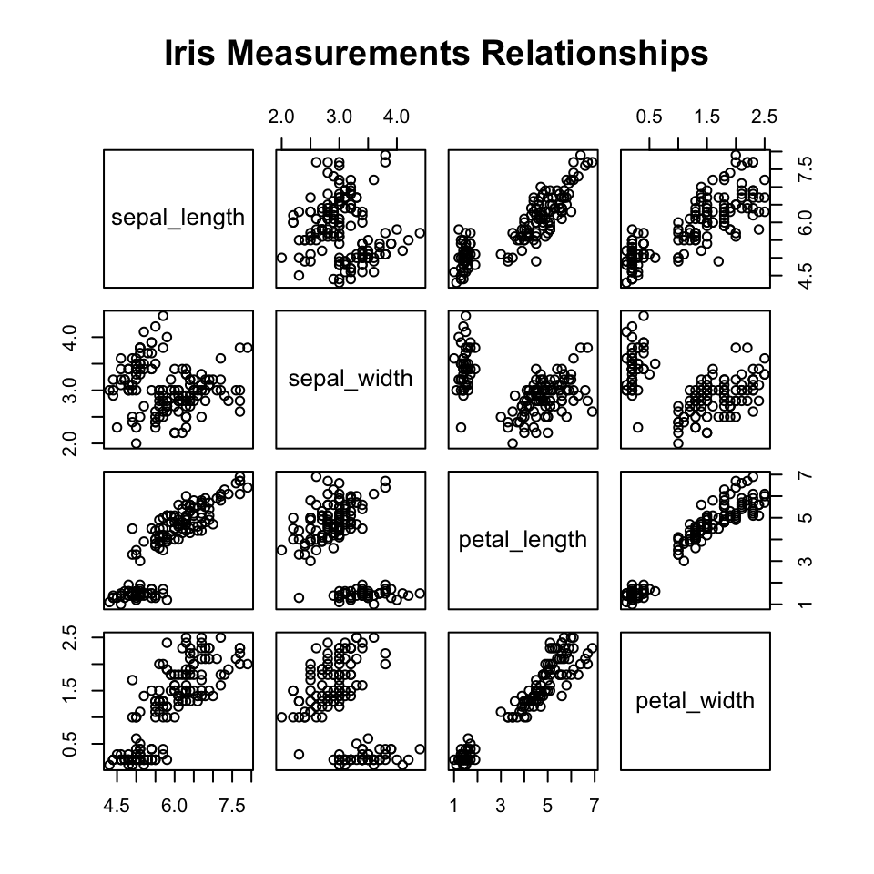
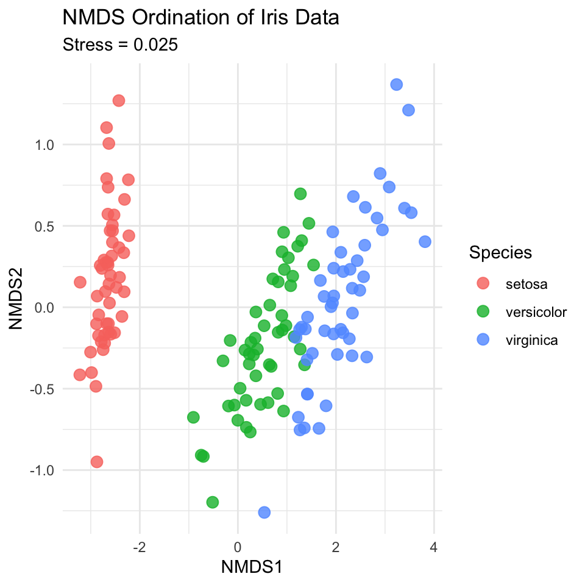
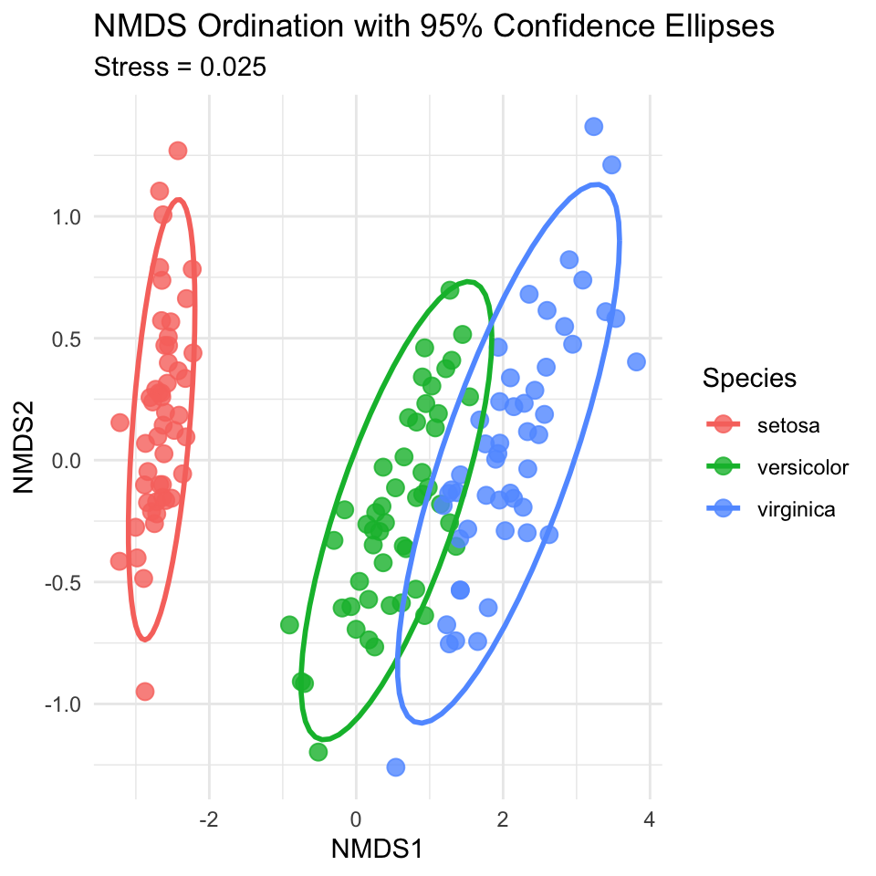
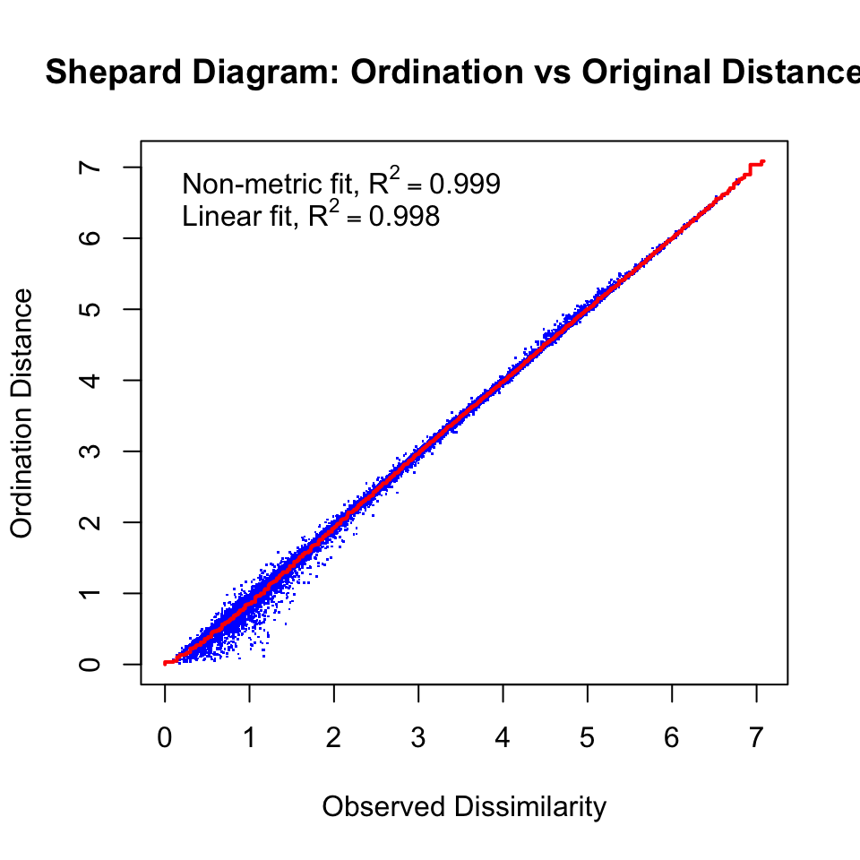
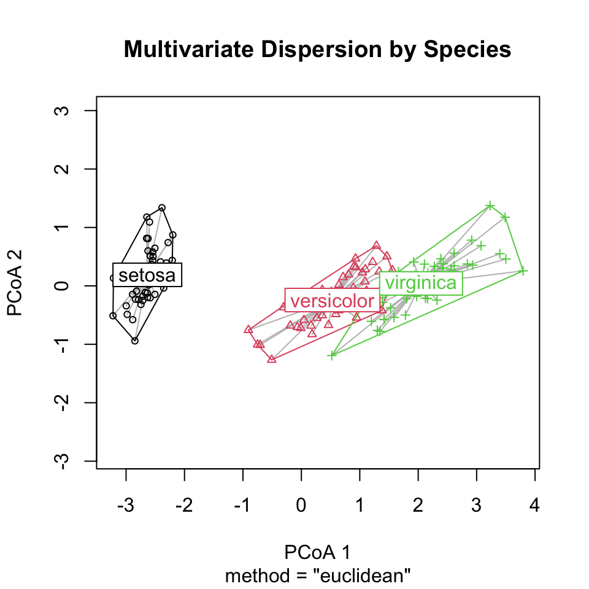
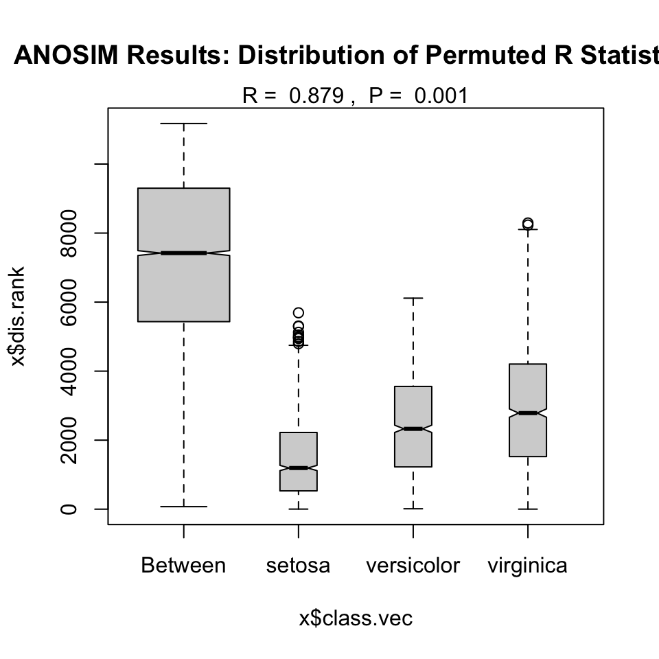

Lecture 18: Non-metric Multidimensional Scaling (NMDS) and PERMANOVA
What is NMDS?
NMDS (Non-metric Multidimensional Scaling) is an ordination technique that: - Visualizes dissimilarity between objects in reduced dimensions - Preserves rank order of distances, not exact distances - Works well with non-linear ecological relationships - Makes few assumptions about data structure
When to Use NMDS
Use NMDS when you have: - Community data: Species abundance or presence/absence matrices - Non-linear relationships: When PCA assumptions are violated - Complex ecological gradients: Multiple environmental factors affecting communities
Key Concepts of NMDS
Dissimilarity matrices instead of covariance
Stress values measure goodness of fit (<0.2 is acceptable)
Iterative algorithm to find optimal configuration
No eigenvalues - axes have no inherent meaning
Rank-based - preserves order, not exact distances
ImportantCritical First Step
Always check your stress value! Stress < 0.1 is excellent, 0.1-0.2 is good, > 0.2 is poor representation.
Part 1: Data Preparation and Exploration
Load and Prepare Data
We’ll use the iris dataset for this analysis, treating it as if the measurements represent abundances of different “species” at different “sites”.
Rows: 150 Columns: 5
── Column specification ────────────────────────────────────────────────────────
Delimiter: ","
chr (1): species
dbl (4): sepal_length, sepal_width, petal_length, petal_width
ℹ Use `spec()` to retrieve the full column specification for this data.
ℹ Specify the column types or set `show_col_types = FALSE` to quiet this message.
# For NMDS, we need just the numeric columns (our "species" data)# We'll keep species as our grouping variableiris_species_df <- iris_df %>% dplyr::select(species)iris_numeric_df <- iris_df %>% dplyr::select(-species)# Check the structurestr(iris_numeric_df)
# Create a pairs plot to see relationshipsiris_pairs_plot <- iris_df %>% dplyr::select(-species) %>%pairs(main ="Iris Measurements Relationships")

Part 2: Running NMDS
Step 1: Calculate Distance Matrix
# Calculate Bray-Curtis distance (common for ecological data)# For iris data, we'll use Euclidean distance since these are measurementsiris_dist <-dist(iris_numeric_df, method ="euclidean")# Check the first few distancesiris_dist[1:5]
# Run NMDS with 2 dimensionsset.seed(123) # For reproducibilityiris_nmds_model <-metaMDS(iris_numeric_df, distance ="euclidean",k =2, # Number of dimensionstrymax =100) # Maximum iterations
Run 0 stress 0.02525035
Run 1 stress 0.04045544
Run 2 stress 0.03566855
Run 3 stress 0.0268287
Run 4 stress 0.03695952
Run 5 stress 0.03104439
Run 6 stress 0.02682881
Run 7 stress 0.03962709
Run 8 stress 0.03210416
Run 9 stress 0.04325555
Run 10 stress 0.02525031
... New best solution
... Procrustes: rmse 1.741237e-05 max resid 7.129696e-05
... Similar to previous best
Run 11 stress 0.02525038
... Procrustes: rmse 1.217807e-05 max resid 8.876481e-05
... Similar to previous best
Run 12 stress 0.04000578
Run 13 stress 0.03552087
Run 14 stress 0.0309981
Run 15 stress 0.04078306
Run 16 stress 0.04008785
Run 17 stress 0.03197035
Run 18 stress 0.02525033
... Procrustes: rmse 5.481604e-06 max resid 2.712782e-05
... Similar to previous best
Run 19 stress 0.02682875
Run 20 stress 0.03270101
*** Best solution repeated 3 times
# Check the resultsiris_nmds_model
Call:
metaMDS(comm = iris_numeric_df, distance = "euclidean", k = 2, trymax = 100)
global Multidimensional Scaling using monoMDS
Data: iris_numeric_df
Distance: euclidean
Dimensions: 2
Stress: 0.02525031
Stress type 1, weak ties
Best solution was repeated 3 times in 20 tries
The best solution was from try 10 (random start)
Scaling: centring, PC rotation
Species: expanded scores based on 'iris_numeric_df'
Interpretation: - Stress value: 0.025 - This is excellent representation
Step 3: Extract NMDS Scores
# Extract NMDS scores for plottingnmds_scores_df <-as.data.frame(iris_nmds_model$points) %>%rename(nmds1 = MDS1, nmds2 = MDS2) %>%bind_cols(iris_species_df)# View the scoreshead(nmds_scores_df)
# Basic NMDS plotnmds_basic_plot <-ggplot(nmds_scores_df, aes(x = nmds1, y = nmds2, color = species)) +geom_point(size =3, alpha =0.8) +labs(title ="NMDS Ordination of Iris Data",subtitle =paste("Stress =", round(iris_nmds_model$stress, 3)),x ="NMDS1", y ="NMDS2",color ="Species") +theme_minimal()nmds_basic_plot

Step 5: Add Confidence Ellipses
# NMDS plot with ellipsesnmds_ellipse_plot <-ggplot(nmds_scores_df, aes(x = nmds1, y = nmds2, color = species)) +geom_point(size =3, alpha =0.8) +stat_ellipse(level =0.95, size =1) +labs(title ="NMDS Ordination with 95% Confidence Ellipses",subtitle =paste("Stress =", round(iris_nmds_model$stress, 3)),x ="NMDS1", y ="NMDS2",color ="Species") +theme_minimal()
Warning: Using `size` aesthetic for lines was deprecated in ggplot2 3.4.0.
ℹ Please use `linewidth` instead.
nmds_ellipse_plot

Step 6: Stress Plot (Shepard Diagram)
# Create stress plot to evaluate fitstressplot(iris_nmds_model, main ="Shepard Diagram: Ordination vs Original Distances")

Part 3: PERMANOVA Analysis
What is PERMANOVA?
PERMANOVA (Permutational Multivariate Analysis of Variance) tests whether groups have different multivariate centroids using permutation tests.
Step 1: Run PERMANOVA
# Run PERMANOVA to test if species differ in multivariate spaceset.seed(456)iris_permanova_model <-adonis2(iris_numeric_df ~ species, data = iris_df,method ="euclidean",permutations =999)# View resultsiris_permanova_model
Permutation test for adonis under reduced model
Permutation: free
Number of permutations: 999
adonis2(formula = iris_numeric_df ~ species, data = iris_df, permutations = 999, method = "euclidean")
Df SumOfSqs R2 F Pr(>F)
Model 2 592.07 0.86894 487.33 0.001 ***
Residual 147 89.30 0.13106
Total 149 681.37 1.00000
---
Signif. codes: 0 '***' 0.001 '**' 0.01 '*' 0.05 '.' 0.1 ' ' 1
Before interpreting PERMANOVA, we need to check if groups have similar multivariate spread.
# Test homogeneity of multivariate dispersionsiris_dist_full <-dist(iris_numeric_df)dispersion_model <-betadisper(iris_dist_full, iris_df$species)# Test for differences in dispersiondispersion_test <-anova(dispersion_model)dispersion_test
Analysis of Variance Table
Response: Distances
Df Sum Sq Mean Sq F value Pr(>F)
Groups 2 2.9092 1.45458 10.748 4.4e-05 ***
Residuals 147 19.8941 0.13533
---
Signif. codes: 0 '***' 0.001 '**' 0.01 '*' 0.05 '.' 0.1 ' ' 1
Step 3: Visualize Dispersions
# Plot dispersionsplot(dispersion_model, main ="Multivariate Dispersion by Species")

Step 4: Pairwise PERMANOVA
# Function for pairwise PERMANOVA comparisonspairwise_permanova <-function(data_matrix, groups, distance_method ="euclidean") {# Get unique group combinations group_levels <-unique(groups) comparisons <-combn(group_levels, 2)# Initialize results results_df <-data.frame(group1 =character(),group2 =character(),f_statistic =numeric(),r_squared =numeric(),p_value =numeric() )# Run pairwise comparisonsfor(i in1:ncol(comparisons)) {# Subset data group1 <- comparisons[1, i] group2 <- comparisons[2, i] subset_indices <-which(groups %in%c(group1, group2)) subset_data <- data_matrix[subset_indices, ] subset_groups <- groups[subset_indices]# Run PERMANOVA temp_result <-adonis2(subset_data ~ subset_groups, method = distance_method,permutations =999)# Store results results_df <-rbind(results_df, data.frame(group1 = group1,group2 = group2,f_statistic = temp_result$F[1],r_squared = temp_result$R2[1],p_value = temp_result$"Pr(>F)"[1] )) }# Adjust p-values for multiple comparisons results_df$p_adjusted <-p.adjust(results_df$p_value, method ="bonferroni")return(results_df)}# Run pairwise comparisonspairwise_results_df <-pairwise_permanova(iris_numeric_df, iris_df$species)pairwise_results_df
Interpretation: - R statistic: 0.879 - p-value: 0.001 - R close to 1 indicates strong separation between groups
Step 2: Plot ANOSIM Results
# Plot ANOSIM resultsplot(iris_anosim_model, main ="ANOSIM Results: Distribution of Permuted R Statistics")

Part 5: Environmental Fitting (Optional)
If we had environmental variables, we could fit them to the ordination.
# For demonstration, let's use petal_length as an "environmental" variableenv_data_df <-data.frame(petal_length = iris_df$petal_length)# Fit environmental vectorenv_fit_model <-envfit(iris_nmds_model, env_data_df, permutations =999)env_fit_model